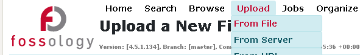
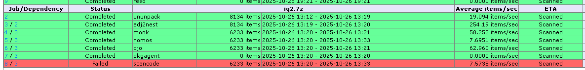
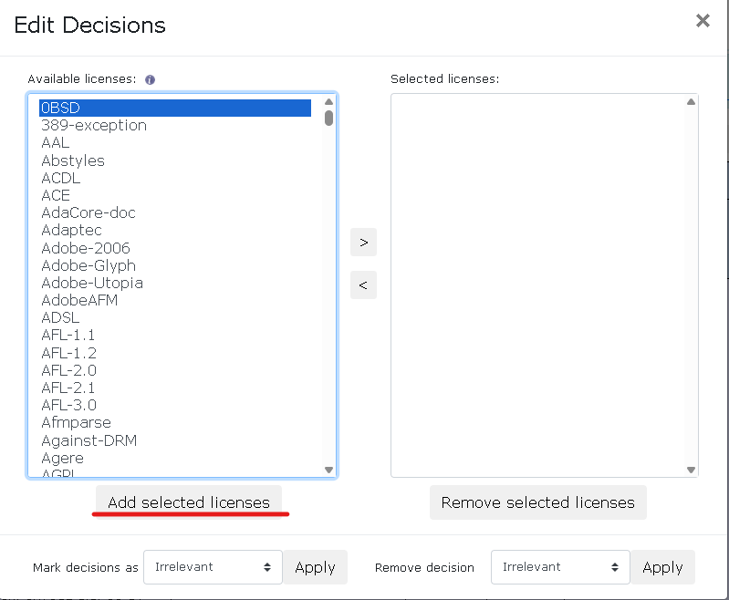

FOSSology 基礎入門
FOSSology 是一個開源授權合規軟體系統與工具包，用於執行授權、版權和出口管制掃描，提供資料庫和網頁使用者介面 (Web UI) 來實現合規工作流程。
1. FOSSology 系統安裝
FOSSology 的後端使用 PostgreSQL 作為資料庫伺服器，並需要 Apache httpd 2.6 作為網頁伺服器。開發堆疊主要使用 C、C++ 和 PHP。
方式一：使用 Docker Compose (推薦)
此方法可確保資料持久性，並定義了多個容器服務（scheduler、web 和 db）。
- 啟動服務： 使用
docker-compose up指令啟動所有三個服務。 - 存取與登入：
- 開啟瀏覽器，存取網址：
http://IP_OF_DOCKER_HOST:8081/repo。 - 使用預設帳號密碼登入：
- 使用者名稱 (Username):
fossy - 密碼 (Password):
fossy
- 使用者名稱 (Username):
- 開啟瀏覽器，存取網址：
方式二：快速單一容器安裝
此方法不管理資料持久性，不建議用於生產環境。
- 執行 Docker 容器：
docker run -p 8081:80 fossology/fossology - 存取與登入： 登入資訊與上述相同。
2. 上傳準備掃描的原始碼
登入 FOSSology 後，可以透過多種方法上傳檔案（例如從伺服器、URL 或 Git 伺服器）。
- 導航至上傳頁面： 點擊選單中的 Upload。
 - 選擇檔案： 選擇最簡單的方式 Upload from file，然後選擇要掃描的壓縮檔 (例如：tarball 或 zip 檔案)。
- 選擇想要使用的分析方法。
3. 上傳頁面中的每個分析選項的意義
FOSSology 會先解包上傳的軟體包，然後對每個文件運行多個分析代理 (Agents)。
| 區域/選項 | 意義與功能 | 支援來源 |
|---|---|---|
| Nomos License Analysis | 授權掃描核心： 採用基於規則（rule-based）的正則表達式和語意關聯偵測授權，即使只找到一個關鍵字也會報告。 | |
| Monk License Analysis | 授權掃描： 採用文字比對法，透過與資料庫中的原始授權文本比對相似度來確認。 | |
| Ojo License Analysis | 授權掃描： 專門掃描 SPDX 授權識別符，速度快且能理解 WITH、AND 或 OR 等連詞。 |
|
| Copyright Analysis | 版權掃描： 掃描文件中的版權聲明，具有非常低的誤報率（false negative finding）。 | |
| ECC Analysis | 出口管制分析： 專門尋找與加密 (Crypto) 或出口管制 (Export Control) 相關的字樣。 | |
| Keyword Analysis | 關鍵字掃描： 可檢查使用者自定義的敏感詞或公司名稱。 | |
| Package Analysis | 套件分析： 偵測檔案中包含的所有第三方套件與元件。 | |
| ScanCode Toolkit | 整合外部工具，用於掃描授權、版權、電子郵件和 URL，使用者可比較兩種工具的結果。 | |
| Automatic Concluded License Deciding | 允許 FOSSology 自動確認最終授權決策。 | |
| Reuse | 重複利用既有的分析結果和人工審查決策，只重新掃描有變更的檔案，有助於節省大量時間。 |
4. 工作排程中每個工作名稱的名詞解釋

當檔案上傳後，系統會分配一個或多個工作（Job）。這些工作由排程器（Scheduler）服務處理。
| 工作階段/名稱 | 描述 |
|---|---|
| Unpack | 將上傳的壓縮檔案解包，以便後續代理程式可以存取內部文件和資料夾。 |
| Database Structure Creation | 解包之後，創建一些內部的資料庫結構。 |
| [Agent Name] Analysis | 運行選定的掃描代理程式（例如 Nomos、Monk、Copyright 等）來分析檔案內容，找到授權、版權等資訊。 |
| [Report Format] Generation | 生成選定的報告文件（例如 Readme OSS 或 Debian Copyright），這也會被視為一個工作並排入隊列。 |
| Completed | 表示該工作已完成，可以查看掃描結果。 |
5. 如何解讀掃描結果？

掃描工作完成後，點擊 Browse 即可進入專案頁面。
- 檔案清理狀態 (Clearing Status)： 檔案旁邊的圓點狀態用於追蹤審查進度。
- 綠色 (Green)： 表示該文件已經過人工審查或確認（done/cleared）。
- 紅色 (Red)： 表示該文件需要人工檢查或審查（needs us to check）。
- Licenses 頁面： 點擊專案名稱下的 Licenses 連結，可以查看所有偵測到的授權條款彙總和數量。
- 詳細文件檢視： 點擊單個檔案名，左側顯示文件內容，右側顯示掃描結果。
- 掃描結果解讀： 每個代理程式都會報告其發現（found licenses）。
- Nomos 會顯示透過哪些正則表達式和關鍵字匹配到授權。
- Monk 會顯示與資料庫中參考文本的相似度（例如 99% 相等）。
- Edited Results： 這是人工編輯或確認後的最終授權資訊，用於補充或修正自動工具的結果。
- 表格空白或 No_license_found： 如果表格完全空白且沒有顯示
No_license_found，可能代表自動掃描工具沒有偵測到任何授權資訊。
6. 人工審查的流程 (Clearing Job)
FOSSology 的審查（Clearing）流程允許審查員處理掃描工具發現的授權問題，並做出最終決策。
步驟一：單一文件審查與確認

- 檢查狀態： 點選旁邊有紅色圓點的檔案。
- 確認授權： 在右側面板中，可以選擇文件與授權之間的關係，例如標記為 known licenses（已知授權）或 identified（已確認）。
- 使用比對工具： 可以使用 Monk 工具檢查文件內容與資料庫中的授權文本是否相似，這有助於確認。
- 儲存決策： 點擊 Submit (提交) 或 Edit (編輯)，並儲存您的決定。文件狀態將變為綠色 (done)。
- 特殊標記： 您可以手動標記決策：
- Irrelevant： 該檔案不具備主體合規意義。
- Do not use： 該檔案禁止導入專案。
- Non-Functional： 該檔案是非功能性或說明性文件。
步驟二：批次處理 (Bulk Scan)
當許多檔案包含相同的授權文本時，使用批次掃描來加速審查。
- 複製授權文本： 在單個檔案的審查頁面中，複製重複出現的授權文本段落。
- 排程批次掃描： 點擊 Bulk 按鈕，貼上文本，並指定該文本的最終授權結論。
- 自動確認： FOSSology 會檢查所有包含該文本的檔案，並自動確認其授權，從而將大量檔案的狀態轉為綠色。
步驟三：處理誤判 (False Positives)
對於掃描器可能報告的誤判（例如版權掃描中的錯誤版權聲明），您可以手動停用 (Deactivate) 它們，使其不會出現在最終報告中。
7. 如何匯出報表？有哪些匯出格式可以選擇？

審查完成後，您可以回到專案頁面，執行 Actions，然後選擇匯出報告。
| 報告格式 | 描述 | 支援來源 |
|---|---|---|
| Readme OSS | 純文本格式報告，列出已確認的授權文本和版權聲明。 | |
| Debian Copyright | Debian 套件所需的版權格式。 | |
| SPDX | 支援 Tag value 和 RDF 兩種格式。可以一鍵生成 SPDX 文件。 | |
| CSV | 可用於匯出所有找到的版權聲明。 | |
| Word Document output | 支援 Word 文件格式輸出。 | |
| CycloneDX | 正在規劃中的報告格式。 |
注意： 報告生成本身也是一個排程工作。
8. 如何跟 GitLab 完美整合？
FOSSology 旨在將合規檢查前移到持續整合 (CI) 流程中，實現持續掃描 (Continuous Scan)，從而減少整體審計工作量並加速發佈週期。
- 整合方式： FOSSology 提供了針對 CI/CD 流程的輕量級版本，並支援將其 Docker 映像檔整合到 GitLab CI/CD 管道中。
- 持續檢查： 在開發者提交程式碼或引入新依賴時，CI 掃描會立即運行，檢查授權、版權和關鍵字。
- 白名單機制 (
whitelist.json)：- CI 掃描依賴於
whitelist.json文件，該文件列出了允許發佈的授權條款 (例如 GPL 2.0+)。 - 如果掃描到任何不在白名單內的授權，CI 流程會立即失敗，並顯示「紅旗」（red flag），要求開發者在早期階段解決合規問題。
- 此文件也可用於排除掃描特定的文件或資料夾（例如測試檔案或配置資料夾），並支援萬用字元（glob characters）。
- CI 掃描依賴於
- 掃描模式選擇： CI 支援兩種模式：
- Diff Scanning Mode (差異掃描模式)： 預設模式，僅掃描程式碼貢獻或合併請求中發生變更的行，速度非常快。
- Repo Scan (儲存庫掃描)： 進行完整儲存庫掃描，適用於稽核或 Git 標籤/發佈。
- 好處： 頻繁的檢查使得稽核工作更小、更快，減少了在發佈週期的後期進行重大變更的需求。